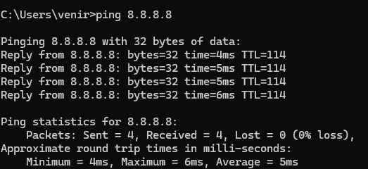
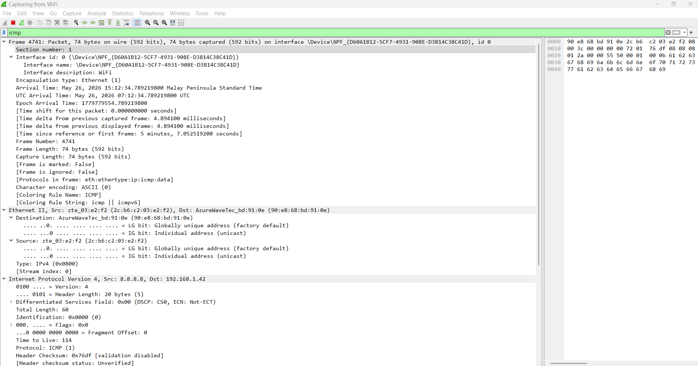
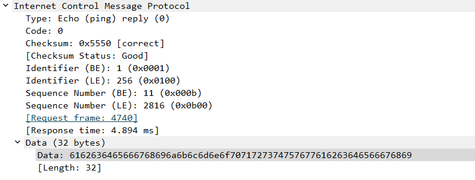
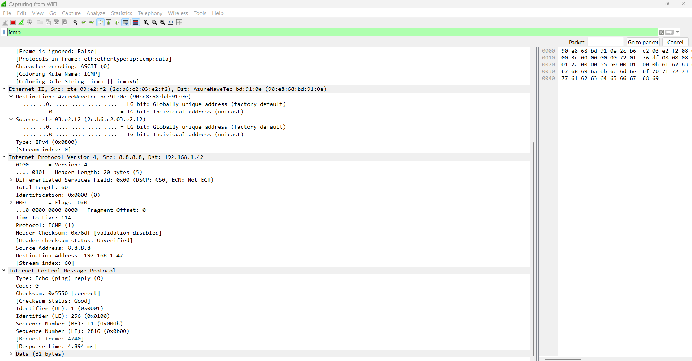

Project 03 / Wireshark Network Traffic Analysis
Analysed ICMP network traffic using Wireshark to monitor ping request and reply communication.
A cybersecurity portfolio project focused on packet capture, ICMP traffic analysis, network troubleshooting, and connectivity validation using Wireshark.
Project Overview
Network packet analysis using Wireshark.
ICMP (Internet Control Message Protocol) was used to test network connectivity using the ping command. The Wireshark capture displayed both Echo Request and Echo Reply packets exchanged between the source and destination IP addresses. This confirmed successful two-way communication and verified that the target host was reachable over the network.
Start packet capture
Generate ICMP traffic
Apply ICMP filter
Analyse packet details
Validate request and reply
Monitor network communication
Tools Used
Technologies and commands used in the project.
Security Tools
Wireshark
Windows Command Prompt
ICMP Protocol Analysis
Commands & Filters
ping 8.8.8.8
icmp
Echo (ping) request
Echo (ping) reply
Packet Analysis
ICMP packet analysis using Wireshark.
Analysed ICMP Echo Request and Echo Reply packets to observe network communication between the source and destination systems and validate successful connectivity.
Filter Applied: icmp Protocol: ICMP Type: Echo (ping) request Type: Echo (ping) reply Source IP: 8.8.8.8 Destination IP: 192.168.1.42 Response Time: 4.894 ms
Evidence Gallery
Screenshots and validation evidence from the Wireshark analysis.




Analysis Findings
Successful network communication identified.
ICMP Traffic Analysis
Analysed ICMP Echo Request and Echo Reply packets to monitor network communication activity.
Connectivity Validation
Verified successful communication between source and destination IP addresses using ping requests and replies.
Packet Inspection
Examined packet details including response time, sequence number, protocol type, and checksum information.
Project Results
Successful ICMP communication captured and analysed using Wireshark.
Analysis Component
Outcome
ICMP Filter
Successfully isolated ICMP packets
Echo Request
Detected outbound ping request traffic
Echo Reply
Confirmed successful response from destination
Connectivity Status
Network communication successful
Skills Demonstrated
Packet Capture
Captured and monitored live network traffic using Wireshark.
Protocol Analysis
Analysed ICMP packets including Echo Request and Echo Reply traffic.
Network Troubleshooting
Verified network connectivity and communication between hosts.
Traffic Filtering
Applied protocol-based filtering to isolate relevant network traffic.